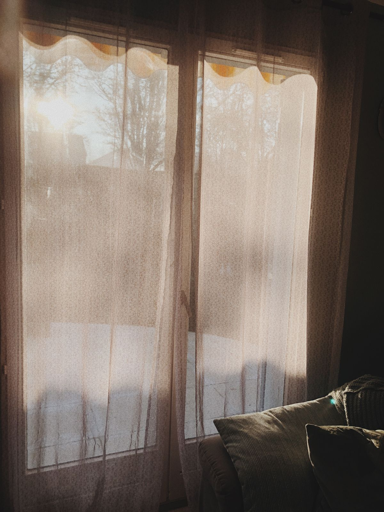

Gardinenservice
Gardinen ab, sauber, wieder dran
Keine Leiter, kein Schleppen: Wir hängen Ihre Gardinen und Vorhänge ab, reinigen sie schonend und hängen sie wieder auf.

Unser Rundum-Service
- Abhängen bei Ihnen zu Hause oder im Büro
- Waschen bzw. Reinigen passend zum Material
- Glätten und faltenfrei zurückbringen
- Wieder aufhängen
Natürlich können Sie Gardinen auch selbst bei uns im Laden abgeben. Der Preis richtet sich nach Größe, Material und Anzahl der Fenster – wir nennen ihn vorher.
Abholung vereinbaren
Rufen Sie uns an unter 0511 464252 oder nutzen Sie das Anfrageformular. Unser Laden: An der Kirche 10, 30457 Hannover-Wettbergen.